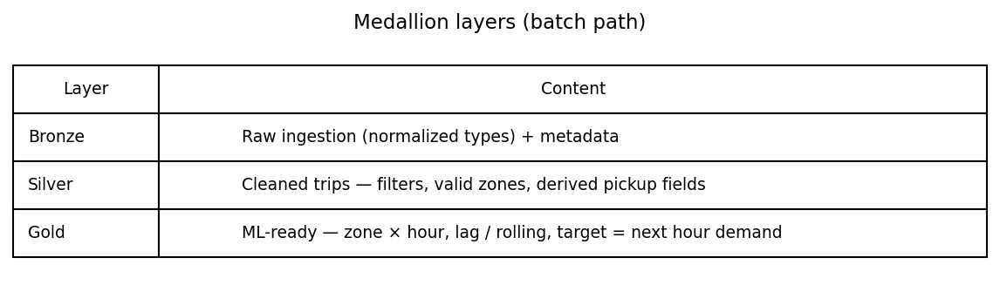
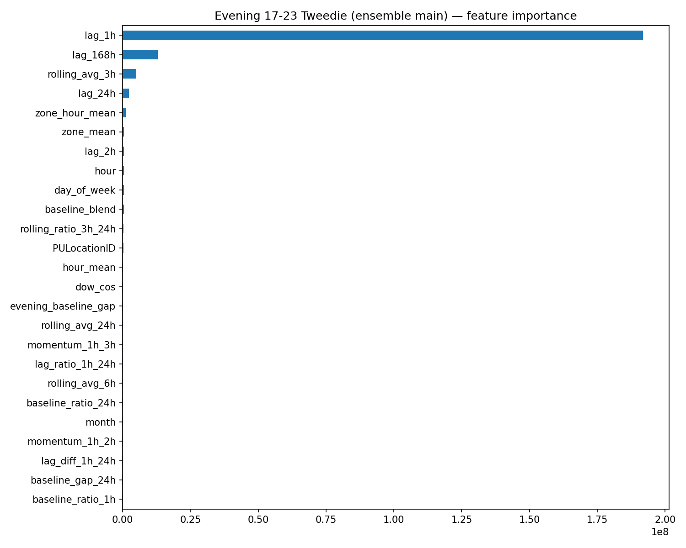
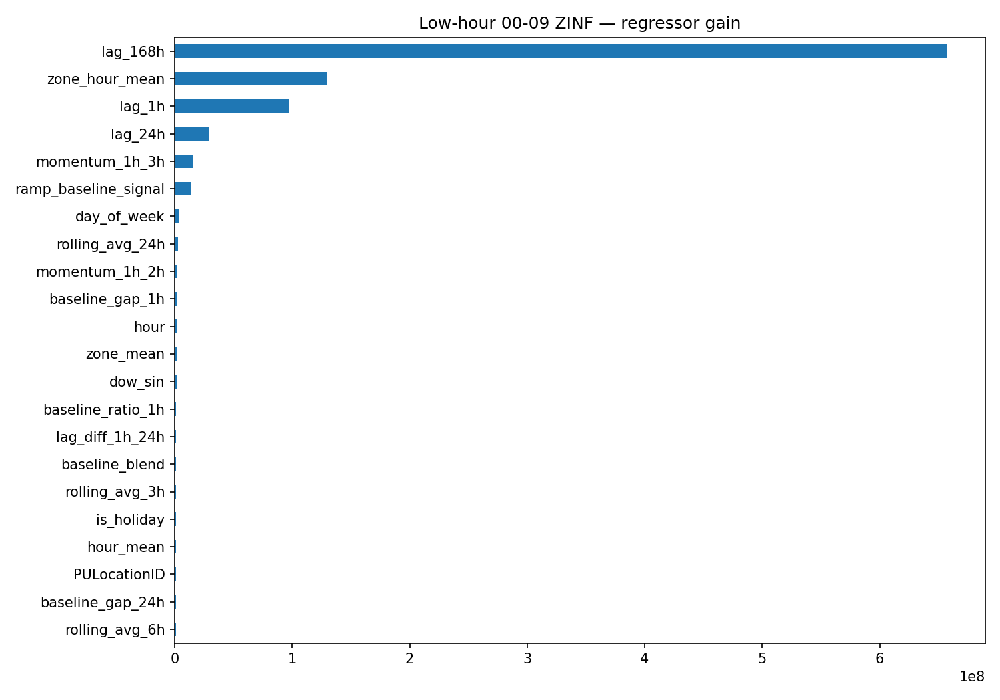
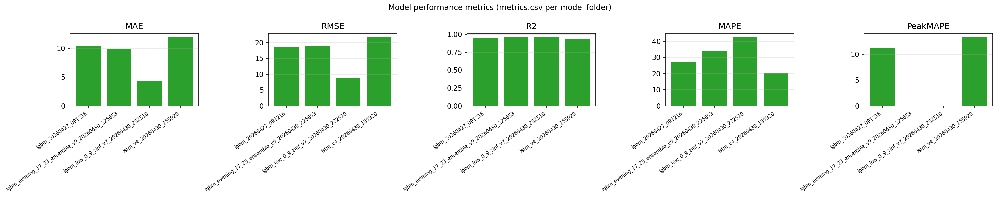
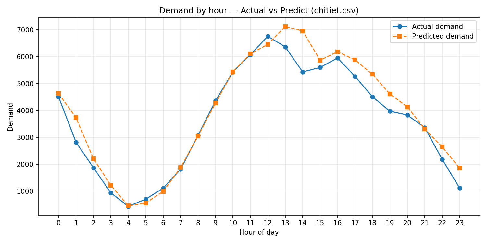
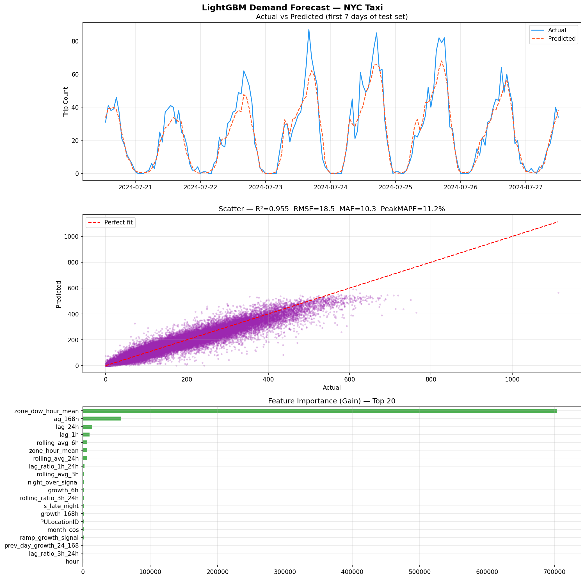
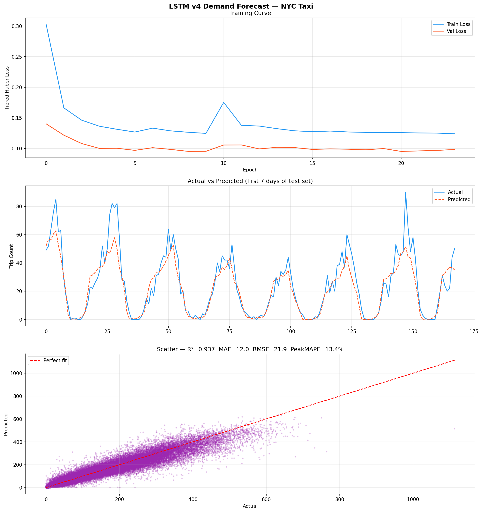

NYC Taxi Demand Forecasting System là hệ thống dự báo nhu cầu taxi theo thời gian thực được xây dựng dựa trên kiến trúc Lakehouse kết hợp giữa batch processing và streaming processing. Dự án tập trung vào bài toán dự báo nhu cầu taxi theo từng khu vực và từng khung giờ nhằm mô phỏng cách các hệ thống vận hành dữ liệu thực tế xử lý dữ liệu lớn, realtime inference và machine learning forecasting.
Hệ thống sử dụng Apache Spark để xử lý dữ liệu phân tán, Kafka để truyền dữ liệu streaming, Delta Lake để quản lý dữ liệu theo kiến trúc Medallion, MinIO làm object storage tương thích S3, cùng với LightGBM và LSTM để xây dựng mô hình dự báo. Dashboard realtime được triển khai bằng Streamlit nhằm trực quan hóa kết quả inference và theo dõi demand prediction theo thời gian.
Problem & Objective
Bài toán của dự án xuất phát từ việc nhu cầu taxi thay đổi liên tục theo thời gian và khu vực, đặc biệt trong các thành phố lớn như New York. Dữ liệu taxi có tính time-series mạnh, đồng thời phân bố không đồng đều giữa các zone và các thời điểm trong ngày. Điều này khiến việc dự báo demand trở thành một bài toán vừa mang tính machine learning vừa mang tính data engineering.
Mục tiêu của hệ thống là xây dựng một pipeline end-to-end có khả năng ingest dữ liệu taxi, xử lý dữ liệu theo mô hình Lakehouse, huấn luyện mô hình forecasting và thực hiện realtime inference phục vụ dashboard visualization. Ngoài việc giải quyết bài toán dự báo, dự án còn tập trung mô phỏng cách thiết kế kiến trúc dữ liệu hiện đại sử dụng batch pipeline kết hợp streaming pipeline trong cùng một hệ thống.

Biểu đồ theo giờ cho thấy pattern nhu cầu taxi trong ngày — phục vụ định hướng feature theo chu kỳ và xác nhận bài toán forecasting có cấu trúc time-series rõ ràng trước khi đi vào pipeline và mô hình.
System Architecture
Kiến trúc hệ thống được xây dựng theo mô hình phân tách batch processing và streaming processing nhằm đảm bảo dữ liệu huấn luyện và dữ liệu realtime được xử lý độc lập. Toàn bộ hệ thống được triển khai bằng Docker Compose với các service chính bao gồm Spark Master, Spark Workers, Kafka, Zookeeper, MinIO, Dashboard và ML Training container.
Batch pipeline chịu trách nhiệm xử lý dữ liệu lịch sử từ file Parquet, xây dựng các layer Bronze, Silver và Gold theo kiến trúc Medallion, sau đó tạo feature và huấn luyện mô hình forecasting. Trong khi đó, streaming pipeline mô phỏng luồng dữ liệu realtime bằng cách upload dữ liệu qua Streamlit Dashboard, đẩy dữ liệu vào Kafka và thực hiện inference gần realtime phục vụ visualization.
MinIO đóng vai trò object storage trung tâm cho toàn bộ Delta tables, trong khi Delta Lake giúp quản lý dữ liệu theo dạng transactional lakehouse. Kafka được sử dụng như tầng trung gian giúp tách biệt ingestion và processing, từ đó giúp pipeline có khả năng mở rộng và dễ dàng tích hợp thêm các downstream services trong tương lai.
Batch Processing Pipeline
Batch pipeline bắt đầu từ dữ liệu taxi lịch sử được lưu dưới dạng Parquet. Apache Spark đọc các file này và thực hiện ingest vào Bronze Layer dưới dạng Delta Lake. Bronze Layer đóng vai trò lưu trữ dữ liệu gần như nguyên bản sau khi được chuẩn hóa schema và kiểu dữ liệu nhằm đảm bảo tính traceability và khả năng replay dữ liệu khi cần.
Sau Bronze Layer, dữ liệu được chuyển sang Silver Layer để thực hiện cleaning và filtering. Tại đây, các bản ghi không hợp lệ như null timestamp, invalid zones hoặc trip duration bất thường sẽ bị loại bỏ. Silver Layer đóng vai trò tạo ra tập dữ liệu sạch và đáng tin cậy cho downstream processing.
Gold Layer là tầng dữ liệu phục vụ machine learning. Dữ liệu được aggregate theo zone và theo từng khung giờ nhằm tạo chuỗi thời gian demand forecasting. Tại đây, hệ thống tạo các feature như lag features, rolling averages, cyclical encoding và các time-based features phục vụ huấn luyện mô hình forecasting. Target prediction được xây dựng theo horizon một giờ nhằm dự báo nhu cầu taxi ở khung giờ kế tiếp.
Sau khi dữ liệu Gold được tạo ra, các mô hình LightGBM và LSTM sẽ được huấn luyện để phục vụ inference. LightGBM được sử dụng cho realtime prediction nhờ tốc độ inference nhanh và khả năng xử lý tốt dữ liệu tabular, trong khi LSTM được dùng để khai thác temporal dependency trong dữ liệu time-series.
Streaming Pipeline
Streaming pipeline được xây dựng nhằm mô phỏng hệ thống realtime inference trong môi trường production. Người dùng upload dữ liệu Parquet thông qua Streamlit Dashboard, sau đó dữ liệu được đẩy vào Kafka topic dưới dạng Arrow IPC batch message.
Kafka đóng vai trò message broker giúp tách biệt ingestion và processing. Sau khi consumer nhận dữ liệu từ Kafka, pipeline thực hiện ghi dữ liệu vào Bronze Streaming Layer và tiếp tục xử lý sang Silver Streaming Layer tương tự batch processing nhưng theo luồng realtime.
Khi dữ liệu streaming được xử lý hoàn tất, pipeline sẽ thực hiện inference bằng các model đã được huấn luyện từ batch pipeline. Kết quả prediction được ghi vào Gold Prediction Layer và hiển thị trực tiếp trên dashboard. Việc tách riêng path streaming và batch giúp đảm bảo dữ liệu realtime không ảnh hưởng tới dữ liệu training cũng như giúp hệ thống dễ maintain hơn.
Data Engineering Workflow
Một trong những trọng tâm chính của dự án là thiết kế data pipeline theo kiến trúc Medallion. Việc phân chia dữ liệu thành Bronze, Silver và Gold giúp hệ thống dễ dàng audit, debug và tái xử lý dữ liệu ở từng tầng riêng biệt. Bronze Layer tập trung vào raw ingestion, Silver Layer tập trung vào data quality và cleaning, trong khi Gold Layer phục vụ analytics và machine learning.
Delta Lake được sử dụng để quản lý dữ liệu thay vì chỉ sử dụng Parquet thông thường. Điều này giúp hệ thống hỗ trợ transaction, schema evolution và quản lý dữ liệu ổn định hơn trong môi trường distributed processing. Toàn bộ dữ liệu được lưu trên MinIO nhằm mô phỏng cloud object storage theo chuẩn S3-compatible.
Kafka được sử dụng để xây dựng streaming architecture và giúp hệ thống có khả năng mở rộng tốt hơn. Việc sử dụng Arrow IPC batch thay vì JSON giúp tối ưu serialization cho dữ liệu lớn và giảm overhead trong quá trình truyền dữ liệu giữa producer và consumer.

Bảng tóm tắt đối chiếu ba tầng Medallion — raw → cleaned → ML-ready — khớp với luồng Spark ingest và Delta trên MinIO trong pipeline.
Machine Learning Pipeline
Bài toán forecasting trong dự án được xây dựng theo hướng supervised time-series forecasting với target là nhu cầu taxi của khung giờ kế tiếp. Feature engineering đóng vai trò rất quan trọng trong việc cải thiện chất lượng dự báo.
Hệ thống sử dụng nhiều loại feature như historical lag features, rolling statistics, cyclical encoding theo giờ và ngày trong tuần, cùng với các time-based features nhằm giúp model học được pattern theo thời gian. Chronological split được sử dụng thay cho random split nhằm tránh data leakage trong forecasting workflow.
LightGBM được lựa chọn làm model chính cho realtime inference nhờ tốc độ suy luận nhanh và hiệu quả tốt trên dữ liệu tabular. Ngoài ra, hệ thống còn triển khai specialized low-hour model dành cho các khung giờ demand thấp nhằm xử lý hiện tượng zero-inflated demand. LSTM được triển khai như một mô hình bổ sung nhằm học temporal dependency trong dữ liệu chuỗi thời gian.

Thứ tự độ quan trọng của feature với mô hình khung giờ cao điểm (evening) giúp đối chiếu trực tiếp với các lag và biến thời gian đã thiết kế trong Gold layer.

Mô hình low-hour tập trung vào các khung giờ nhu cầu thấp; phân bố feature importance khác evening model, phản ánh chiến lược tách mô hình cho zero-inflated demand.

So sánh chỉ số hiệu năng giữa các cấu hình / mô hình giúp củng cố lựa chọn LightGBM cho inference nhanh và vai trò bổ sung của LSTM trên chuỗi thời gian.

Đường actual và predict theo giờ cho thấy mức khớp của forecasting trên từng khung giờ — minh họa trực tiếp chất lượng dự báo sau feature engineering và huấn luyện.
Dashboard & Visualization
Dashboard được xây dựng bằng Streamlit nhằm cung cấp giao diện trực quan cho việc monitoring và visualization. Người dùng có thể upload dữ liệu, theo dõi trạng thái pipeline và xem realtime prediction trực tiếp trên dashboard.
Kết quả dự báo được visualize bằng Plotly thông qua các time-series chart và zone-based visualization. Dashboard cũng hỗ trợ so sánh giữa actual demand và predicted demand nhằm đánh giá chất lượng mô hình forecasting theo thời gian thực.
Mặc dù dashboard được xây dựng theo hướng realtime-ish thay vì realtime hoàn toàn, hệ thống vẫn mô phỏng đầy đủ workflow từ ingestion, processing đến inference và visualization trong cùng một pipeline.

Giao diện dashboard với biểu đồ actual vs predict từ mô hình LightGBM — phù hợp luồng inference nhanh và hiển thị trực tiếp trên Streamlit.

Phiên bản LSTM trên dashboard cho phép đối chiếu cùng một khung nhìn time-series với LightGBM, làm rõ trade-off giữa mô hình tabular nhanh và mô hình học chuỗi.
Infrastructure & Deployment
Toàn bộ hệ thống được container hóa bằng Docker Compose nhằm đảm bảo khả năng tái lập môi trường và dễ dàng triển khai. Các service bao gồm Spark Cluster, Kafka, Zookeeper, MinIO, Dashboard và ML Training container được kết nối thông qua internal Docker network.
Spark được sử dụng để xử lý distributed batch processing trong khi Kafka đảm nhận vai trò streaming layer. MinIO đóng vai trò centralized object storage cho toàn bộ Delta tables và model artifacts. Việc container hóa toàn bộ hệ thống giúp quá trình setup và chạy pipeline trở nên đơn giản hơn đồng thời mô phỏng cách triển khai microservice architecture trong môi trường thực tế.
Results & Learning Outcomes
Dự án giúp xây dựng thành công một hệ thống forecasting end-to-end kết hợp giữa data engineering, machine learning và realtime visualization. Pipeline batch và streaming được triển khai độc lập nhưng vẫn liên kết thông qua shared lakehouse architecture và centralized storage.
Thông qua dự án, hệ thống thể hiện khả năng thiết kế distributed data pipeline, xây dựng streaming workflow với Kafka, triển khai machine learning forecasting pipeline và trực quan hóa realtime inference bằng dashboard. Đây là dự án tập trung mạnh vào engineering mindset, system architecture và khả năng xây dựng hệ thống dữ liệu gần với production workflow thực tế.